ts.plot(Nile, ylab = expression(Fluxo~em~10^8~m^3) , lwd = 2)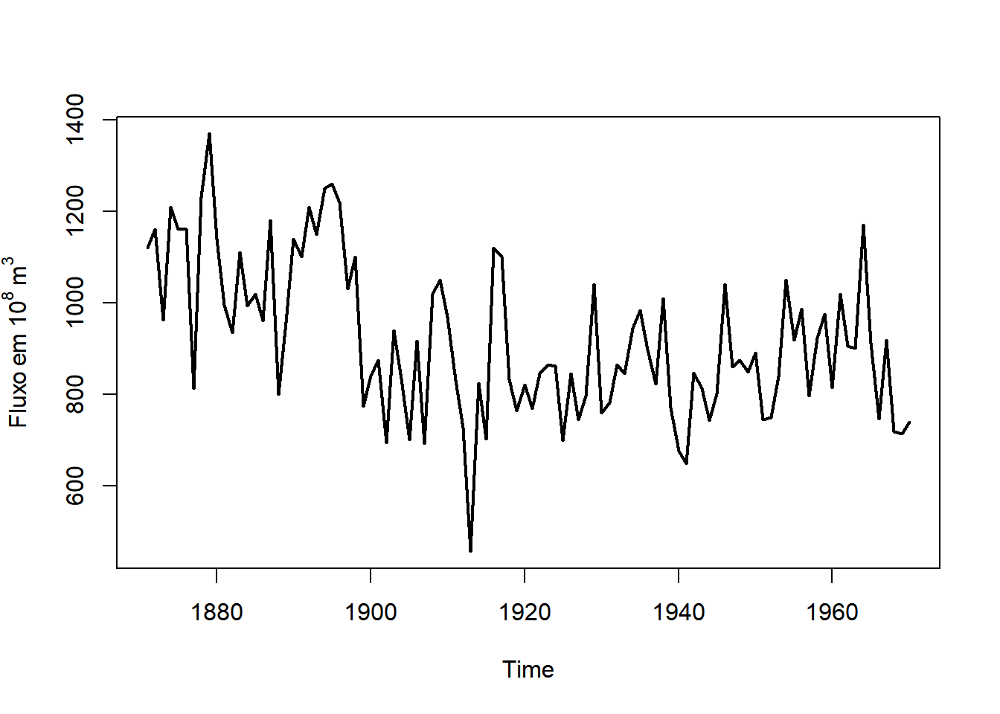
Considere uma série temporal com a decomposição \[y_t=\hbox{sinal}_t+\hbox{ruído}_t\] Seja \(\mathcal{D}_t\) a série observada. Para qualquer \(0<k\leq t\) o valor suavizado \(\tilde{sinal}_k\) correspode a uma estimativa do sinal considerando a amostra \(\mathcal{D}_t\).
Os métodos de suavização (ou alisamento) que serão estudados aqui são formulados considerando a seguinte lógica:
Considere que função de previsão para \(y_t\) é \[\hat{y}_{t-1}(1)=F(\theta_{t-1})\] onde \(\theta_t\) é o valor suavizado dos parâmetros envolvidos no tempo \(t\). Assuma que o erro de previsão é aditivo, ou seja, \[e_t=y_t-\hat{y}_{t-1}(1)=y_t-F(\theta_{t-1}).\] Como a suavização de \(\theta_t\) é obtida utilizando \(\hat{y}_{t-1}\) e \(\theta_{t-1}\), os modelos clássicos de suavização exponencial podem ser escritos da forma de equações de espaço estado com inovações, ou seja, \[\begin{align}y_t&=F(\theta_{t-1})+\Phi(\theta_{t-1}) e_t\\ \theta_t&= G(\theta_{t-1})+\psi(\theta_{t-1})e_t \end{align}\] onde \(\theta_t\) é denominado estado, \(\psi(.)\) e \(\Phi(.)\) são funções escalares, \(F(.)\) e \(G(.)\) são funções vetoriais.
Ao assumir que \(e_t\) é um ruido branco gaussiano, a função de verossimilhança para \(\theta_0\) e os demais parâmetros fixos é \[L=\prod_{i=1}^n\frac{1}{\sqrt{2\pi\nu}}\exp\left\{-\frac{1}{2\nu}\left(\frac{y_i-F(\theta_{t-1})}{\Psi(\theta_{t-1})}\right)^2\right\}\] e suas estimativas, de máxima verossimilhança, são obtidas por maximização numérica de \(\log L\).
Considerando a amostra \(\mathcal{D}_t\), note que o valor \(\theta_t\) já foi obtido. Podemos escrever \[y_{t+h}=F(\theta_{t+h-1})+\Psi(\theta_{t+h-1})e_{t+h}\] e, utilizando diversas vezes a relação recursiva entre os estados, podemos escrever \(y_{t+h}\) como função de \(\theta_t\) e dos erros \(e_{t+h},\ldots, e_{t+1}\). Com isso, podemo encontrar a distribuição de \(y_{t+h}\).
Um caso particular importante é dado quando \(F(.)\), \(G(.)\), são lineares,\(\Psi(.)=1\) e \(\psi(.)\) não depende de \(\theta_t\). Nesse caso, o modelo de espaço estado é dado por:
\[\begin{align}y_t&=F'\theta_{t-1}+e_t\\ \theta_t&= G\theta_{t-1}+\psi e_t \end{align}\]
Nesse caso\[\begin{align} y_{t+h}&=F'\theta_{t+h-1}+e_{t+h}=F'G\theta_{t+h-2}+F'\psi e_{t+h-1} + e_{t+h}\\ &=\cdots\\ &=F'G^{h-1}\theta_t+\sum_{j=1}^{h-1}F'G^{j-1}\psi e_{t+h-j}+e_{t+h} \end{align}\]
Como \(y_{t+h}\) pode ser escrito como combinação linear de ruídos gaussianos, teremos que a distribuição para a previsão de horizonte \(h\) tem distribuição normal com média e variância dadas por \[\begin{align} E(y_{t+h}|\mathcal{D}_t)&=F'G^{h-1}\theta_t\\ Var(y_{t+h}|\mathcal{D}_t)&=\nu\left[1+\sum_{j=1}^{h-1}F'G^{j-1}\psi\psi'G'^{j-1}F\right] \end{align}\]
Considere uma série temporal \[y_t = \mu_t+\varepsilon_t\] onde o nível \(\mu_t\) é o sinal e \(\varepsilon_t\) um ruído branco. Como \[E(y_t|\mathcal{D}_{t-1})=\mu_t,\] pelo método dos momentos, \(y_t\) é um estimador para \(\mu_t\) (e, depois observado, \(y_t\) se torna estimativa para o sinal no tempo \(t\)).
Vamos adicionar a restrição de que \(\mu_t\approx \mu_{t+1}\), ou seja, a série flutua em torno de pequenas oscilações no nível. Com isso, dada a amostra \(\mathcal{D}_t\), teremos
\[\hat{y}_{t-1}(1)=E(y_{t}|\mathcal{D}_{t-1})=\mu_{t}\approx \mu_{t-1}\] A vantagem da aproximação é que podemos estimar \(\mu_{t-1}\), uma vez que temos a amostra \(\mathcal{D}_{t-1}\). Deste modo, antes de observar \(y_t\),
\[\hat{y}_{t-1}(1)=\tilde{\mu}_{t-1}\] é um estimador para \(\mu_t\), com \(t>1\).
Deste modo, temos duas fontes de informação sobre o nível: a observação \(y_t\) e o valor suavizado \(\tilde{\mu}_{t-1}\), que representa a previsão \(\hat{y}_{t-1}(1)\). O método de suavização exponencial simples consiste em ponderar essas fontes, criando a seguinte estimativa ponderada para o sinal:
\[\tilde{\mu}_t=\alpha y_t + (1-\alpha)\hat{y}_{t-1}(1),\] onde \(\alpha\in(0,1)\). Também pode-se escrever o método da seguinte forma:
\[\tilde{\mu}_t=\alpha y_t + (1-\alpha)\tilde{\mu}_{t-1}.\] Tal forma nos permite entender o nome exponencial, uma vez que
\[\begin{align}\tilde{\mu}_t&=\alpha y_t + (1-\alpha)\tilde{\mu}_{t-1}\\&=\alpha y_t + \alpha(1-\alpha)y_{t-1}+(1-\alpha)^2 \tilde{\mu}_{t-2}\\&=\sum_{j=1}^{t-1}\alpha(1-\alpha)^jy_{t-j}+(1-\alpha)^t\tilde{\mu}_0\end{align}\]
Esse modelo pode ser escrito na seguinte forma de espaço estado: \[\begin{align} y_t&=\tilde{\mu}_{t-1}+e_t\\ \tilde{\mu}_{t}&=\tilde{\mu}_{t-1}+\alpha e_t \end{align}\] logo, identificando \(F=1, G=1,\psi=\alpha\), teremos que \[y_{t+h}|\mathcal{D}_t\sim\hbox{Normal}\left(\tilde{\mu}_t,\nu[1+\alpha^2(h-1)]\right)\]
Considere novamente a série Nile, cujos valores representam o fluxo anual do rio Nilo entre 1871 e 1970. Note que a série aparenta oscilar em torno de um nível constante após 1898.
ts.plot(Nile, ylab = expression(Fluxo~em~10^8~m^3) , lwd = 2)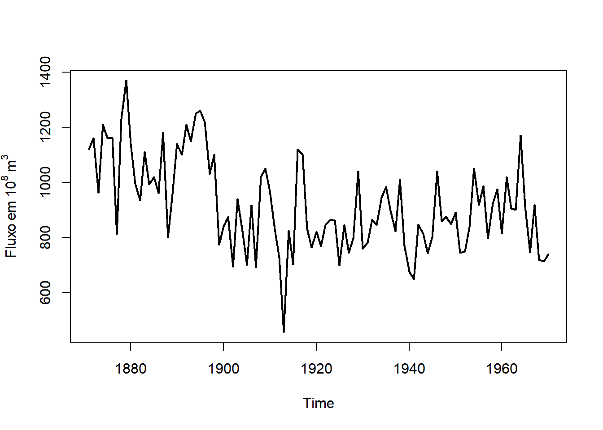
Vamos utilizar a função ets(y, model), do pacote forecast, onde y é a série temporal e model='ANN' representa o modelo de suavização exponencial.
require(forecast)Carregando pacotes exigidos: forecastWarning: package 'forecast' was built under R version 4.3.1Registered S3 method overwritten by 'quantmod':
method from
as.zoo.data.frame zoo mod <- ets(Nile, 'ANN')
modETS(A,N,N)
Call:
ets(y = Nile, model = "ANN")
Smoothing parameters:
alpha = 0.2455
Initial states:
l = 1110.6869
sigma: 144.2318
AIC AICc BIC
1458.781 1459.031 1466.597 Acima podemos ver as estimativas dos parâmetros: \(\hat{\alpha}=0.2455\), \(\tilde{\mu}_0=1110.6869\) e \(\nu=144.2318^2\).
Como de costume, devemos verificar se existem evidências para assumir que o modelo é adequado analisando os resíduos, que podem ser acessados no item $residuals.
res <- mod$residuals
ts.plot(res)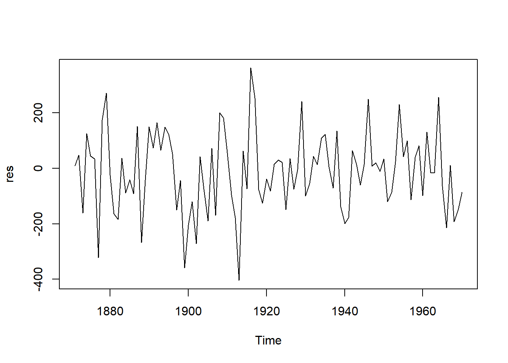
acf(res)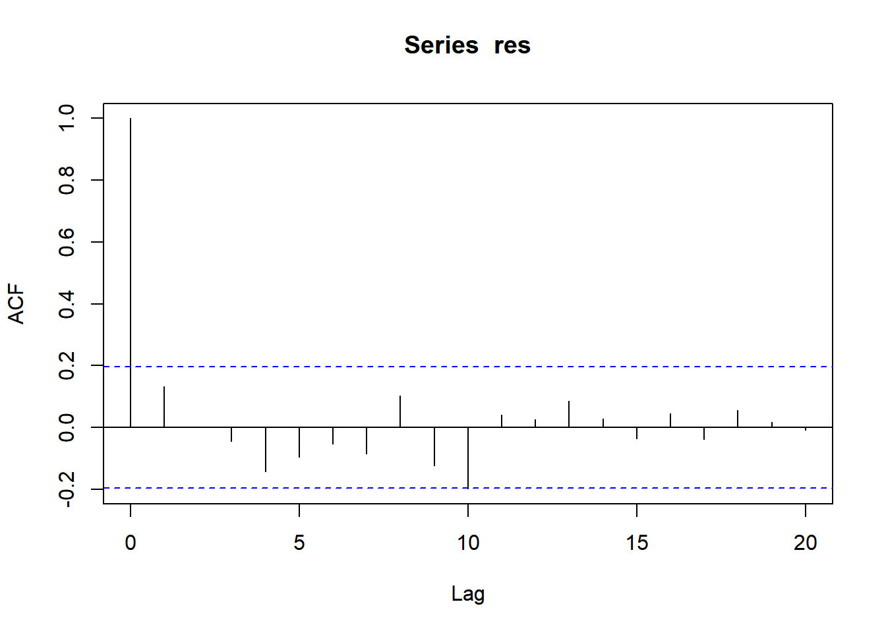
shapiro.test(res)
Shapiro-Wilk normality test
data: res
W = 0.99304, p-value = 0.8902Box.test(res)
Box-Pierce test
data: res
X-squared = 1.7244, df = 1, p-value = 0.1891Os resíduos oscilam em torno de zero e o correlograma não mostra evidências contra a hipótese de ruído branco. O teste Shapiro-Wilks não rejeita a normalidade e o de Box-Pierce não rejeita a hipótese de ruído branco. Portanto, vamos considerar que o modelo é adequado.
Os valores suavizados \(\tilde{\mu}_0,\ldots,\tilde{\mu}_t\) podem ser acessados na lista $states, conforme vemos abaixo.
ts.plot(Nile, ylab = expression(Fluxo~em~10^8~m^3) , lwd = 2)
lines(mod$states, col ='tomato', lwd = 3)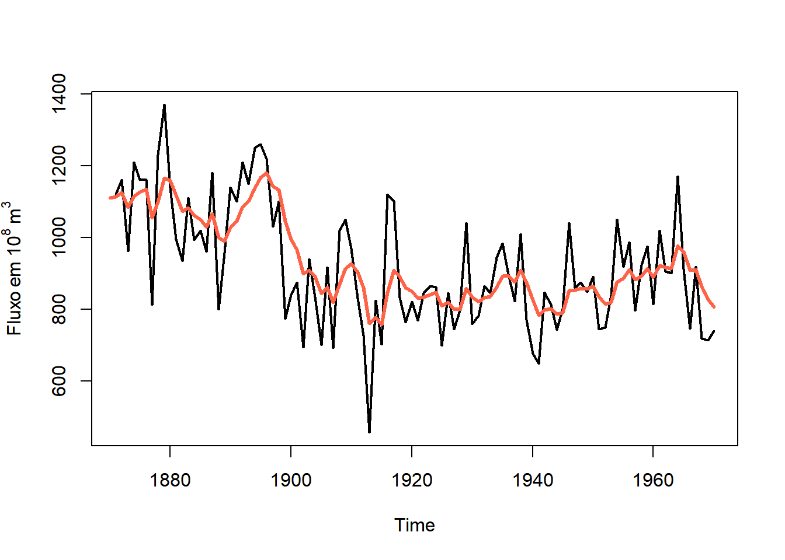
Por último, podemos realizar previsões com a função forecast conforme ilustramos abaixo para os 5 anos à frente (observe que a previsão é constante, mas, como esperado, sua variância aumenta linearmente ao longo do tempo).
plot( forecast(mod, 5))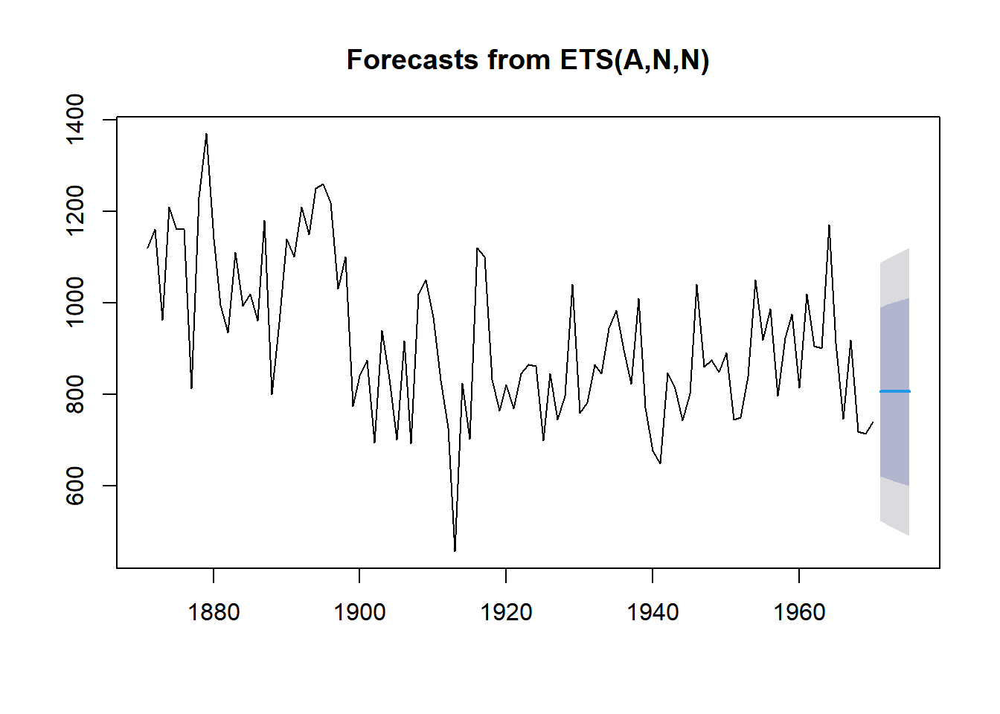
Considere agora um modelo da forma \[y_t = T(t) + \varepsilon_t,\] onde \(T(t)\) é uma componente de tendência. Nesse caso, \[\mu_t=E(y_t|\mathcal{D}_t)=T(t)\] Como vimos anteriormente, a suaziação no tempo \(t\) pode ser feita ponderando a observação \(y_t\) com sua respectiva previsão para no tempo \(t-1\):
\[\tilde{\mu}_t=\alpha y_t + (1-\alpha)\hat{y}_{t-1}(1).\] Como \(T(t)\) é localmente linear, então é natural assumir um modelo de previsão da seguinte forma: \[y_t(h)= \tilde{\mu}_t+ h\tilde{b}_t,\] onde \(\tilde{b}_t\) é a inclinação da tendência no tempo \(t\). Então,
\[\begin{align*} \tilde{\mu}_t &= \alpha y_t + (1-\alpha)\hat{y}_{t-1}(1) \\ &=\alpha y_t + (1-\alpha)\left( \tilde{\mu}_{t-1} + \tilde{b}_{t-1}\right). \end{align*}\]
A equação acima mostra a evolução de \(\tilde{\mu}_t\), mas não há atualização para \(\tilde{b}_t\). Com este objetivo, vamos ponderar duas fontes de informação sobre a inclinação. A primeira está no fato de que, como a tendência é localmente linear, é esperado que \[\tilde{b}_t\approx \tilde{b}_{t-1}.\] A segunda pode ser obtida através dos níveis \(\tilde{\mu}_t\) e \(\tilde{\mu}_{t-1}\). Uma vez que a relação entre esses dois é aproximadamente linear, sua diferençanos dá noção sobre a inclinação (crescimento/decrescimento) como mostra a figura abaixo.
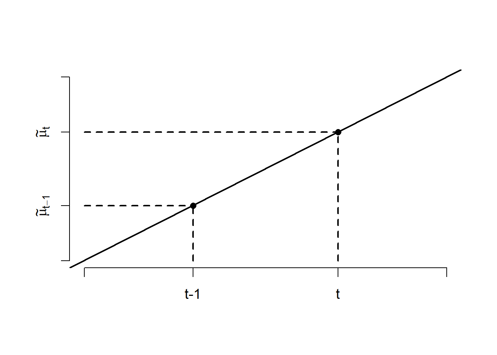
O valor da inclinação da reta formada por \(a_t\) e \(\tilde{\mu}_{t-1}\) é dado por \[\frac{\tilde{\mu}_t - \tilde{\mu}_{t-1}}{t - (t-1)} = \tilde{\mu}_t - \tilde{\mu}_{t-1}.\] Combinando este com a última inclinação suavizada, teremos \[\tilde{b}_t = \beta (\tilde{\mu}_t - \tilde{\mu}_{t-1}) + (1-\beta)\tilde{\mu}_{t-1},\]
onde \(\beta\in(0,1)\) é a constante de suavização da tendência.
Combinando as últimas equações teremos o modelo de suavização exponencial de Holt:
\[\begin{align*} \tilde{\mu}_t &= \alpha y_t + (1-\alpha)\left( \tilde{\mu}_{t-1} + \tilde{b}_{t-1}\right) \\ \tilde{b}_t &= \beta (\tilde{\mu}_t - \tilde{\mu}_{t-1}) + (1-\beta)\tilde{b}_{t-1}. \end{align*}\]
O conjunto de equações acima pode ser reescrito como pode ser reescrita como \[\begin{align*}
\tilde{\mu}_t &= \tilde{\mu}_{t-1} + \tilde{b}_{t-1}+\alpha\left( y_t-\tilde{\mu}_{t-1} - \tilde{b}_{t-1}\right)= \tilde{\mu}_{t-1} + \tilde{b}_{t-1}+\alpha e_t\\
\tilde{b}_t &= \tilde{b}_{t-1}+\beta (\tilde{\mu}_t - \tilde{\mu}_{t-1}-\tilde{b}_{t-1}).
\end{align*}\]
A partir da primeira equação acima, deduzimos que \(\tilde{\mu}_t-\tilde{\mu}_{t-1}-\tilde{b}_{t-1}=\alpha e_t\). Substituindo essa informação na segunda equação teremos \[\begin{align*}
\tilde{\mu}_t &= \tilde{\mu}_{t-1} + \tilde{b}_{t-1}+\alpha e_t\\
\tilde{b}_t &= \tilde{b}_{t-1}+\alpha\beta e_t.
\end{align*}\]
ou, em forma matricial, \[\left(\begin{array}{c}\tilde{\mu}_t\\ \tilde{b}_t\end{array}\right)=\left(\begin{array}{cc}1 & 1 \\ 0 & 1\end{array}\right)\left(\begin{array}{c}\tilde{\mu}_{t-1}\\ \tilde{b}_{t-1}\end{array}\right)+\left(\begin{array}{c}\alpha\\ \alpha\beta\end{array}\right)e_t,\]
Note ainda que é possível escrever a equação do modelo em forma matricial: \[y_{t+h}=\tilde{\mu}_{t+h-1}+\tilde{b}_{t+h-1}+e_{t+h-1}=(\begin{array}{cc}1&1\end{array})\left(\begin{array}{c}\tilde{\mu}_{t+h-1}\\ \tilde{b}_{t+h-1}\end{array}\right)+e_{t+h}\] Pode-se então mostrar que este modelo possui a seguinte especificação como modelo de espaço estado:
\[\begin{align} F'&=(1\;\; 1)\\ G&=\left(\begin{array}{cc} 1 & 1 \\ 0 & 1\\ \end{array}\right)\\ \theta_t'&=(\tilde{\mu}_t\;\;\tilde{b}_t)\\ \psi'&=(\alpha\;\;\alpha\beta) \end{align}\]
Desse modo, os parâmetros \(\alpha,\beta,\tilde{\mu}_0\) e \(\tilde{b}_0\) podem ser obtidos via método de estimação da máxima verossimilhança. Logo, a distribuição da previsão com horizonte \(h\) é dada por
\[y_{t+h}|\mathcal{D}_t\sim\hbox{Normal}\left(\tilde{\mu}_t+h\tilde{b}_t, \nu\sigma^2_h\right),\] onde \[\sigma^2_h = 1+(h-1)\left(\alpha^2 + \alpha\beta h + \frac{\beta^2}{6}h(2h-1)\right).\]
Voltemos ao conjunto de dados com o número mensal de ocorrências aeronáuticas, mantido pela Força Aérea Brasileira.
url <- 'https://www.dropbox.com/scl/fi/kq4jwbovu94u857238sus/N-mensal-de-acidentes-com-aeronaves-2013jan.csv?rlkey=n5pa45e7ht33houmiawdkjb09&dl=1'
x <- read.csv(url, h = T)
ocorrenciasFAB <- ts( x, start = c(2013,1), frequency=12)
ts.plot(ocorrenciasFAB, lwd = 2, xlab = 'Ano', ylab = 'No. ocorrências aeronáuticas')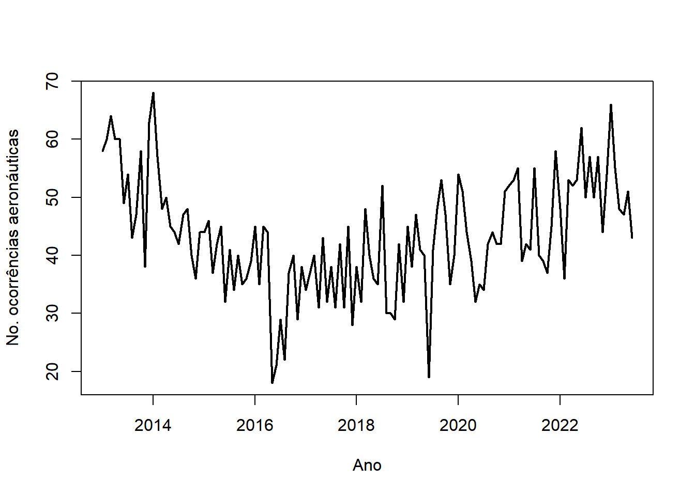
Vamos utilizar a função ets(y, model), do pacote forecast, onde y é a série temporal e model='AAN' representa o modelo de suavização exponencial de Holt. Vamos adicionar o argumento damped=FALSE - estudaremos esse argumento na seção sobre amortecimento.
require(forecast)
mod <- ets(ocorrenciasFAB, 'AAN', damped = FALSE)
modETS(A,A,N)
Call:
ets(y = ocorrenciasFAB, model = "AAN", damped = FALSE)
Smoothing parameters:
alpha = 0.0651
beta = 0.0117
Initial states:
l = 61.6314
b = -0.9175
sigma: 7.7512
AIC AICc BIC
1131.363 1131.863 1145.545 Acima podemos ver as estimativas dos parâmetros: \(\hat{\alpha}=0.0651\), \(\hat{\beta}=0,0117\), \(\tilde{\mu}_0=61,6314\), \(\tilde{b}_0=-0,9175\) e \(\nu=7,7512^2\).
Como de costume, devemos verificar se existem evidências para assumir que o modelo é adequado analisando os resíduos, que podem ser acessados no item $residuals.
res <- mod$residuals
ts.plot(res)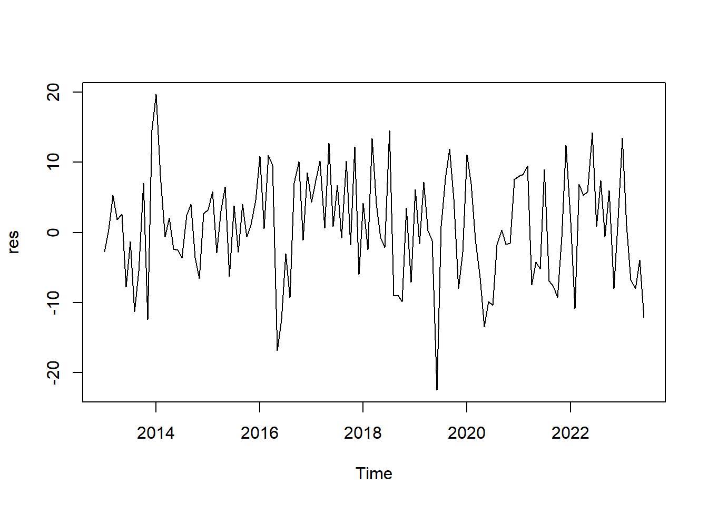
acf(res)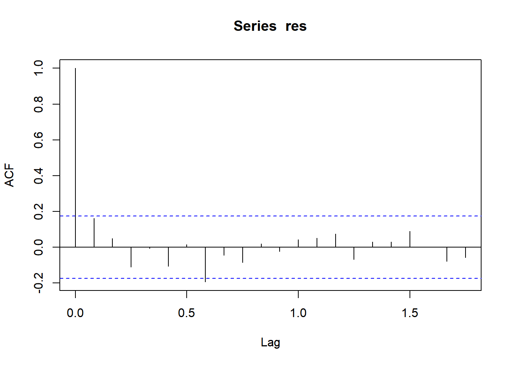
shapiro.test(res)
Shapiro-Wilk normality test
data: res
W = 0.99237, p-value = 0.7257Box.test(res)
Box-Pierce test
data: res
X-squared = 3.2409, df = 1, p-value = 0.07182Os resíduos oscilam em torno de zero e o correlograma não mostra evidências contra a hipótese de ruído branco. O teste Shapiro-Wilks não rejeita a normalidade e o de Box-Pierce não rejeita a hipótese de ruído branco. Portanto, vamos considerar que o modelo é adequado.
Os valores suavizados \(\tilde{\mu}_0,\ldots,\tilde{\mu}_t\) podem ser acessados na lista $states, na primeira coluna, conforme vemos abaixo.
ts.plot(ocorrenciasFAB, ylab = 'No. ocorrências aeronáuticas mensal' , lwd = 2)
lines(mod$states[,1], col ='tomato', lwd = 3)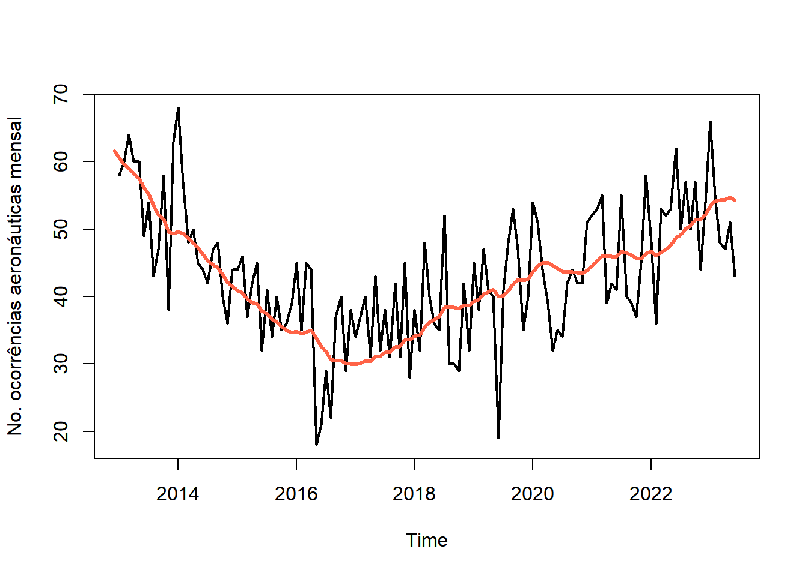
A segunda coluna de $states mostra os valores suavizados para a inclinação. É interessante observar o gráfico desses valores contra a linha horizontal em zero, para entender os regimes de crescimento e decrescimento da série. Abaixo mostramos o curioso padrão dessa série: a inclinação começou desacelerando desde de o começo do registro até março de 2017. Desde então, a inclinação se oscila em torno de um nível constante.
ts.plot(mod$states[,2], col ='tomato', lwd = 3, ylab = 'Inclinação suavizada')
abline(h=0, lty = 2)
abline(v = 2017+3/12, lty = 2)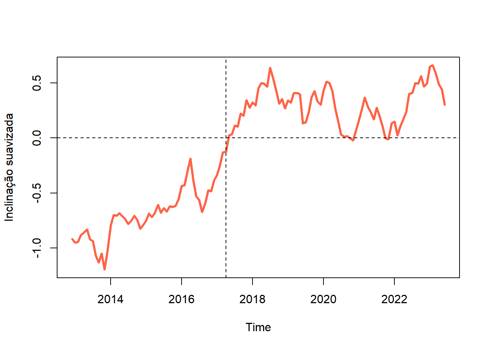
Por último, podemos realizar previsões com a função forecast conforme ilustramos abaixo para os 6 meses à frente, completando o ano de 2023.
prev <- forecast(mod, 6)
plot( prev)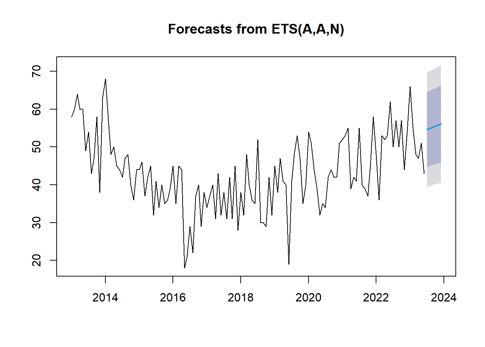
Considere o modelo \[y_t = T(t) + s(t)+\varepsilon_t,\] onde \(T(t)\) e \(s(t)\) são componentes de tendência e sazonalidade, com período \(p\), respectivamente. Identificando \(T(t)\) como \(\mu_t\), teremos que \(E(y_t|\mathcal{D}_{t-1})=\mu_t+s_t\), logo \(y_t-\tilde{s}_t\) é uma fonte de informação para \(\mu_t\).
Considere ainda que \(T(t)\) é localmente liner. Então, as previsões em curto prazo podem ser feitas através de
\[\hat{y}_t(h) = \tilde{\mu}_t + h \tilde{b}_t + \tilde{s}_{t+h}.\] Então Outra fonte de informação sobre \(\mu_t\) é a previsão \(\hat{y}_{t-1}(1)\) livre de sazonalidade, dada por \[\hat{y}_{t-1}(1)-\tilde{s}_{t}=\tilde{\mu}_{t-1} + \tilde{b}_{t-1}.\] Deste modo, o sinal \(\mu_t\) pode ser suavizado de modo análogo ao que foi feito no modelo de suavização exponencial simples, ponderando as duas fontes de informação: \[\begin{align*} \tilde{\mu}_t &= \alpha ( y_t - \tilde{s}_t) + (1-\alpha) (\hat{y}_{t-1}(1) -\tilde{s}_{t})\\ &= \alpha (y_t - \tilde{s}_t) + (1-\alpha) (\tilde{\mu}_{t-1}+ \tilde{b}_{t-1}). \end{align*}\]
Uma vez que temos o valor suavizado do nível, podemos suavizar a inclinação exatamente como foi feito no modelo de Holt: \[\tilde{b}_t = \beta (\tilde{\mu}_t - \tilde{\mu}_{t-1}) + (1-\beta) \tilde{b}_{t-1}.\]
Vamos agora reunir duas fontes de informação sobre a componente sazonal. Primero, podemos descontar o sinal de tendência da série, obtendo assim informações sobre a sazonalidade: \[y_t - \mu_t\approx s_t.\]
Vamos considerar que a componente sazonal é razoavelmente estável, ou seja \(s_{t-p}\approx s_t\) (é a mesma consideração feita no modelo de suavização exponencial). Portanto, podemos suavizar \(s_t\) através da seguinte média ponderada \[\begin{align*} \tilde{s}_t = \gamma (y_t - \tilde{\mu}_t) + (1-\gamma) \tilde{s}_{t-p}, \end{align*}\] onde \(\beta\in(0,1)\) é o suavizador sazonal.
O modelo de Holt-Winters é dado por \[\begin{align*} \tilde{\mu}_t &=\alpha (y_t - \tilde{s}_t) + (1-\alpha) (\tilde{\mu}_{t-1}+ \tilde{b}_{t-1}) \\ \tilde{b}_t &= \beta (\tilde{\mu}_t - \tilde{\mu}_{t-1}) + (1-\beta) \tilde{b}_{t-1} ,\\ \tilde{s}_t &= \gamma (y_t - \tilde{\mu}_t) + (1-\gamma) \tilde{s}_{t-p}. \end{align*}\]
Agora, considere a condição inicial \[\sum_{j=1}^p \tilde{s}_{j-p}=0.\] A suavização de Holt-Winter não mantém a propriedade de soma zero da componente sazonal, uma vez que
\[\sum_{j=1}^p \tilde{s}_{j}=\sum_{j=1}^p\gamma(y_j-\tilde{\mu}_j)+(1-\gamma)\sum_{j=1}^t\tilde{s}_{j-p}=\sum_{j=1}^p\gamma(y_j-\tilde{\mu}_j)\neq 0\] A solução, conhecida como normalização de Roberts-McKenzie, consiste em subtrair, da componente sazonal, o termo \[a_t=\frac{\beta}{p}(y_t-\tilde{\mu}_t-\tilde{s}_t),\] ou seja, \[\begin{align}\tilde{s}_t &= \gamma (y_t - \tilde{\mu}_t) + (1-\gamma) \tilde{s}_{t-p}-a_t. \end{align}\] Desse modo, \[\begin{align}\sum_{j=1}^p \tilde{s}_{j}&=\sum_{j=1}^p\gamma(y_j-\tilde{\mu}_j)+(1-\gamma)\sum_{j=1}^t\tilde{s}_{j-p}-\sum_{j=1}^p a_j\\&=\sum_{j=1}^p\tilde{s}_{j-p}\end{align}\]
Portanto, para garantir que \[\sum_{j=1}^p s_{t+j}=0,\] basta que a soma dos parâmetros iniciais, \(\tilde{s}_{1-p},\ldots,\tilde{s}_0\), seja nula. Portanto, o modelo de Holt-Winter com a normalização de Roberts-McKenzie é \[\begin{align*} \tilde{\mu}_t &=\alpha (y_t - \tilde{s}_t) + (1-\alpha) (\tilde{\mu}_{t-1}+ \tilde{b}_{t-1}) \\ \tilde{b}_t &= \beta (\tilde{\mu}_t - \tilde{\mu}_{t-1}) + (1-\beta) \tilde{b}_{t-1} ,\\ \tilde{s}_t &= \gamma (y_t - \tilde{\mu}_t) + (1-\gamma) \tilde{s}_{t-p}-\frac{\gamma}{p}(y_t-\tilde{\mu}_{t-1}-\tilde{s}_{t}). \end{align*}\]
Como esperado, esse modelo pode ser reescrito na forma dse espaço estado, considerando o erro de previsão \(e_t=y_t-\tilde{\mu}_{t-1}-\tilde{b}_{t-1}-\tilde{s}_{t-p}\). As duas primeiras equações de estado são as mesmas do modelo de Holt: \[\left(\begin{array}{c} \tilde{\mu}_t \\ \tilde{b}_t\end{array}\right)=\left(\begin{array}{cc}1 & 1 \\ 0 & 1\end{array}\right)\left(\begin{array}{c} \tilde{\mu}_{t-1} \\ \tilde{b}_{t-1}\end{array}\right)+\left(\begin{array}{c} \alpha \\ \alpha\beta\end{array}\right)e_t=G_{\hbox{Holt}}\left(\begin{array}{c} \tilde{\mu}_{t-1} \\ \tilde{b}_{t-1}\end{array}\right)+\psi_{\hbox{Holt}}e_t\] Já a terceira equação do modelo, com a normalização de Roberts-McKenzie, pode ser escrita como \[\tilde{s}_t=\tilde{s}_{t-p}+\gamma\left(1-\frac{1}{p}\right)e_t.\] Note que essa mesma equação pode ser escrita como \[\left(\begin{array}{c}\tilde{s}_t\\ \tilde{s}_{t-1} \\ \vdots \\ s_{t-p+1}\end{array}\right)=\underbrace{\left(\begin{array}{c} 0_{p-1'} & 1 \\ \textbf{I}_{p-1} & 0_{p-1} \end{array}\right)}_{P}\left(\begin{array}{c}\tilde{s}_{t-1}\\ \tilde{s}_{t-2} \\ \vdots \\ s_{t-p}\end{array}\right)+\left(\begin{array}{c}1\\ 0 \\ \vdots \\ 0\end{array}\right)\gamma\left(1-\frac{1}{p}\right) e_t\] A matriz \(P\) dada acima é uma matriz do tipo permutação. Essa em particular coloca o elemento da última coordenada na primeira e faz com que todos os outros elementos seja alocados uma coordenada à frente. Fazendo \(\theta_0'=(\tilde{\mu}_0,\tilde{b}_0,\tilde{s}_{1-p},\ldots,\tilde{s}_0)\) teremos que o modelo de Holt-Winter com correção de Roberts-McKenzie na forma de espaço estado é dado por
\[\begin{align} y_t&=\left(\begin{array}{cc|cccc}1&1&1&0&\cdots&0\end{array}\right)\theta_{t-1}+e_t\\ \theta_t&=\left(\begin{array}{cc}G_{\hbox{Holt}} & 0_{2\times p}\\ 0_{p\times 2} & P\end{array}\right)\theta_{t-1}+\left(\begin{array}{c}\alpha \\ \alpha\beta \\ \hline \gamma^*1_p \end{array}\right)e_t\end{align}\] onde \(\gamma^*=\gamma(1-p^{-1})\).
co2Considere novamente a série co2.
mod <- ets(co2, model = 'AAA')Abaixo, segue os gráfico da decomposição através do modelo de Holt-Winter com a normalização.
x <- data.frame(co2, mod$states[,1][-1], mod$states[,2][-1], mod$states[,3][-1])
names(x) <- c('Série original','Nível', 'Inclinação','Sazonalidade')
plot.ts(x)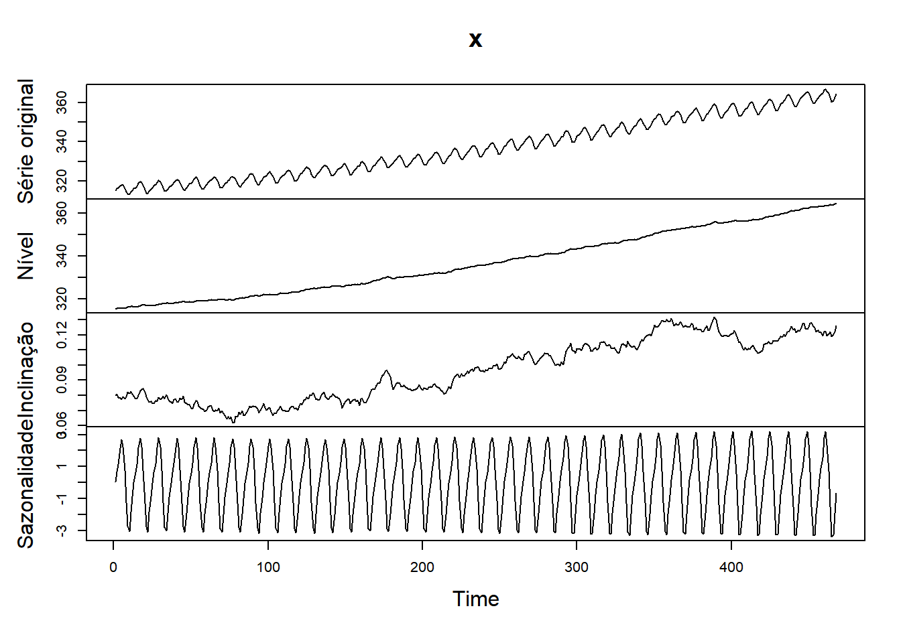
A análise dos resíduos, mostrada abaixo, mostram que o modelo está bam ajustado ao conjunto de dados.
res <- mod$residuals
ts.plot(res)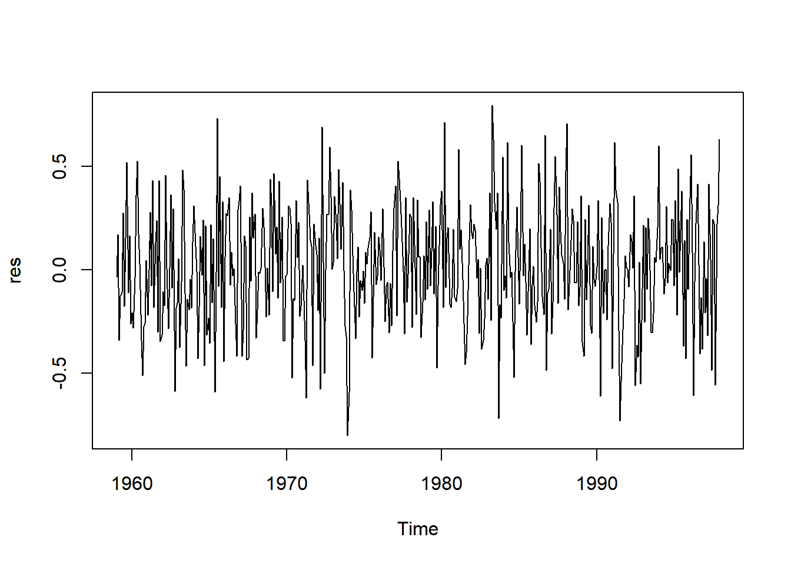
acf(res)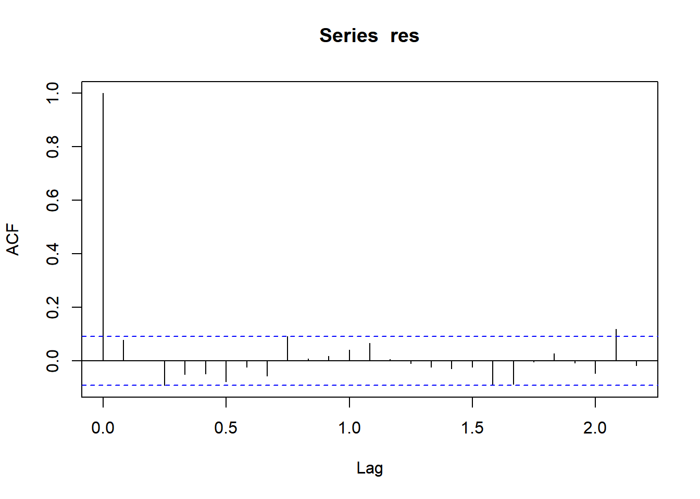
shapiro.test(res)
Shapiro-Wilk normality test
data: res
W = 0.99742, p-value = 0.6848Box.test(res)
Box-Pierce test
data: res
X-squared = 2.8016, df = 1, p-value = 0.09417Considere que a previsão um passo à frente é dada por, \[y_{t}(1)=\tilde{\mu}_{t-1}+\phi\tilde{b}_{t-1}=(1\;\;\phi)\left(\begin{array}{c}\tilde{\mu}_{t-1}\\ \tilde{b}_{t-1}\end{array}\right)\] onde \(\phi\in(0,1)\) tem o objetivo de amortecer a tendência dada pelo método de Holt, criando um previsão não linear. Com isso, teremos \[\begin{align} \tilde{\mu}_t &= \alpha y_t + (1-\alpha)(\tilde{\mu}_{t-1} + \phi\tilde{b}_{t-1})\\ \tilde{b}_t &= \beta(\tilde{\mu}_{t} - \tilde{\mu}_{t-1})+(1-\beta) \phi\tilde{b}_{t-1} \end{align}\] que por sua vez pode ser reescrita como \[\begin{align} \left(\begin{array}{c}\tilde{\mu}_t\\ \tilde{b}_t\end{array}\right) &= \left(\begin{array}{cc}1&\phi\\ 0 &\phi\end{array}\right)\left(\begin{array}{c}\tilde{\mu}_{t-1}\\ \tilde{b}_{t-1}\end{array}\right)+\left(\begin{array}{c}\alpha_t\\ \alpha\beta\end{array}\right)e_t\end{align}\] e, identificando a matriz acima com o termo \(\phi\) como \(G\), teremos que \[\hat{y}_{t}(h)=F'G^{h-1}\theta_{t}=\tilde{\mu}_t+(\phi+\cdots+\phi^h)\tilde{b}_t\] Abaixo, segue um esboço dessa função para alguns valores de \(\phi.\)
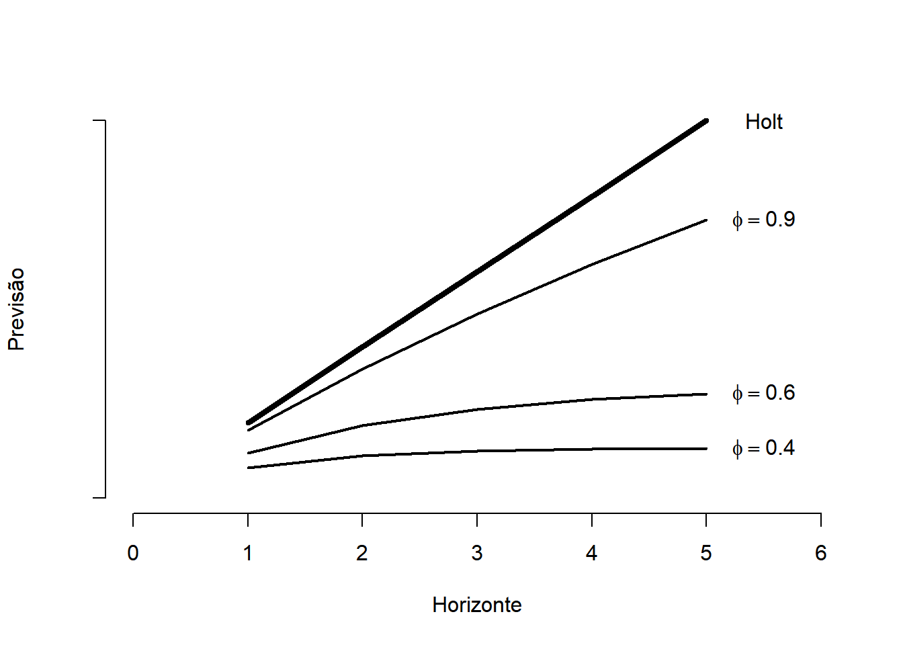
Suponha que \[\hat{y}_t(h)=\tilde{\mu}_t\tilde{b}_t^h\] o que implica que o logaritmo de \(y_t\) possui tendência localmente linear. Podemos adaptar o método de Holt, suavizando, como de costume, \(\tilde{\mu}_t\) por \[\begin{align}\tilde{\mu}_t&=\alpha y_t+(1-\alpha)\hat{y}_{t-1}(1)\\ &=\alpha\tilde{\mu}_{t}+(1-\alpha)\tilde{\mu}_{t-1}\tilde{b}_{t-1}\end{align}\]
Além disso, como o logaritmo da tendência é localmente linear, teremos que \[\log \tilde{\mu}_t-\log\tilde{\mu}_{t-1}\approx \log\tilde{b}_t\] ou ainda \[\tilde{b}_t\approx \frac{\tilde{\mu}_t}{\tilde{\mu}_{t-1}},\] logo, considerando que \(\tilde{b}_t\approx \tilde{b}_{t-1}\), podemos suavizar \(b_t\) do seguinte modo: \[\tilde{b}_t=\beta\frac{\tilde{\mu}_t}{\tilde{\mu}_{t-1}}+(1-\beta)\tilde{b}_{t-1}.\] Deste modo, o modelo com tendência multiplicativa é dado por \[\begin{align} \tilde{\mu}_t&=\alpha y_t+(1-\alpha)\tilde{\mu}_{t-1}\tilde{b}_{t-1}\\ \tilde{b}_t&=\beta\frac{\tilde{\mu}_t}{\tilde{\mu}_{t-1}}+(1-\beta)\tilde{b}_{t-1} \end{align}\] e, na forma de modelo de espaço estado,
\[\begin{align} y_t&=\tilde{\mu}_{t-1}\tilde{b}_{t-1}+e_t\\ \tilde{\mu}_t&=\tilde{\mu}_{t-1}\tilde{b}_{t-1}+\alpha e_t\\ \tilde{b}_t&=\tilde{b}_{t-1}+\alpha\beta\frac{e_t}{\tilde{\mu}_{t-1}} \end{align}\]
As estimativas de máxima verossimilhança para \(\tilde{\mu}_0,\alpha,\nu\) são obtidas via maximização da função de verossimilhança, conforme visto na introdução. Já a distribuição da função de previsão
Note que também existe uma versão deste modelo com o amortecedor. Supondo que \[\log \hat{y}_t(h)=\log(\tilde{\mu}_{t-1})+(\phi+\cdots+\phi^h)\log\tilde{b}_{t-1}\] teremos que a função de previsão com o amortecedor é dada por \[\hat{y}_t(h)=\tilde{\mu}_{t-1}\tilde{b}_{t-1}^{(\phi+\cdots+\phi^h)}\] que por sua vez possui a seguinte forma em espaço estado:
\[\begin{align} y_t&=\tilde{\mu}_{t-1}\tilde{b}_{t-1}^\phi+e_t\\ \tilde{\mu}_t&=\tilde{\mu}_{t-1}\tilde{b}_{t-1}^\phi+\alpha e_t\\ \tilde{b}_t&=\tilde{b}_{t-1}^\phi+\alpha\beta\frac{e_t}{\tilde{\mu}_{t-1}} \end{align}\]
teste